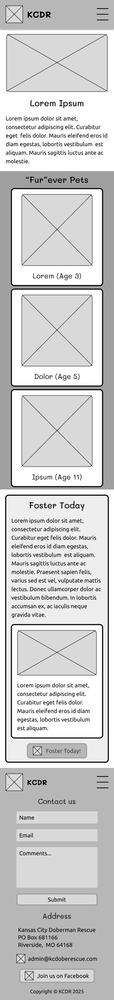
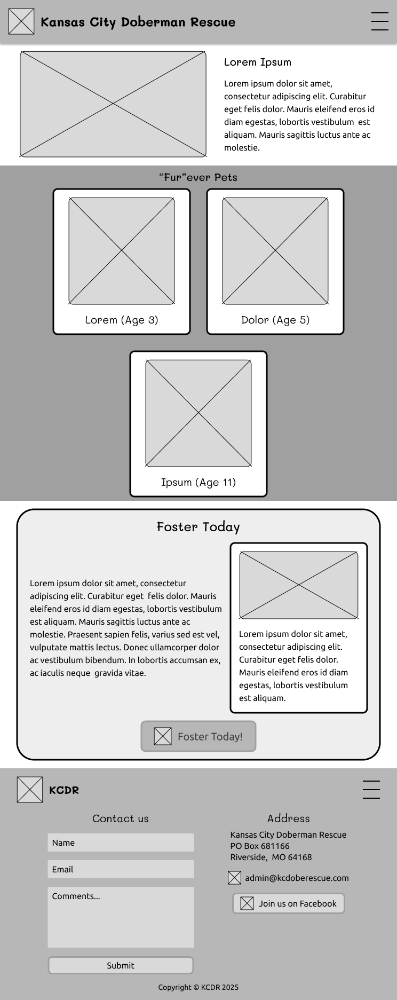
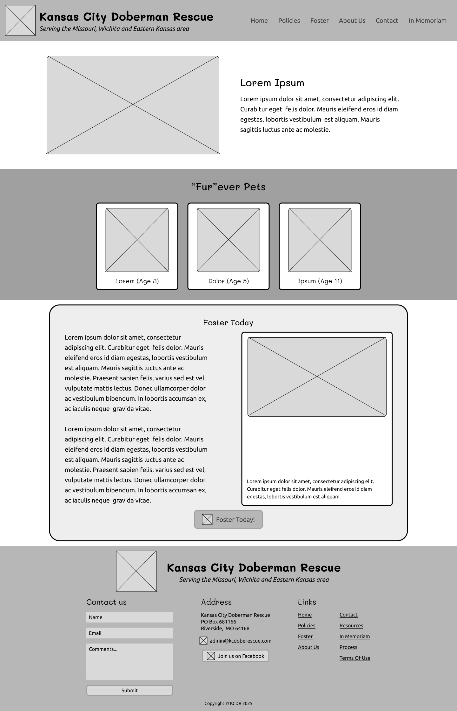
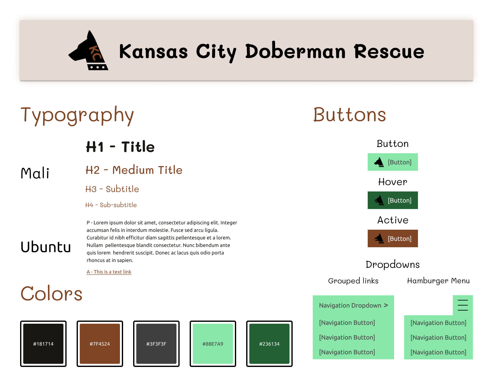
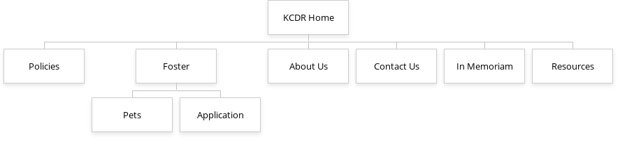

The website I chose to redesign is Kansas City Doberman Rescue.
The site's styles are a little wild, so I am looking to tame them a little bit.
Don't get me wrong, I love the old-internet style, but only if it works and is intentional.
The stylesheet that the website uses itself has several comments questioning why things are coded in a certain way,
so it seems like an overhaul is due.
The website does some things well.
There is a resources page with links that educate users on typical behavior for Dobermans.
It uses a background image for content areas to give the website a little character.
The Policies page in particular has a table of contents list that uses a picture of a Doberman head as the bullet points.
Very cute!
It does do some things well, but a lot of other things it does not do very well.
The layouts are primarily built using grid systems or grid-like structures, but they are unresponsive for mobile.
The front page is built using a grid system, while the In Memoriam page is built using a table.
The logo is very grainy and small and relies on text.
I also noticed as I downloaded the logo that it has a seemingly random assortment of green pixels around the white circle that makes up the majority of the logo.
And last but certainly not least, the navigation looks out of place due to the color scheme.
The navigation structure is fairly simple.
There are four main pages: Home, Policies, Application, and Contact Us, and three sub-pages: Foster, Links,
and In Memoriam.
The sub-pages are hidden under a nondescript menu titled "Menu."
The pages all link to each other through the top navigation with some odd exceptions.
The main title in the header is never a link, except on the In Memoriam page.
Another oddity is that one of the foster dog profile pages forgets to include the header and navigation except for a link to the home page.
The branding is relatively consistent, though it feels halfhearted.
The logo is placed in the right corner of the header, making it feel forgotten.
The color scheme is consistent across all pages, but the colors vary quite a bit.
There is not really a central color.
As mentioned before, the logo has strange green artifacts around it as if someone tried to edit it out of a larger context but did not erase all of the background.
The website is unfortunately, for the most part, not responsive to differing viewports.
As I touched on earlier, the page layouts are made using grid systems or tables without any breakpoints,
so the images that are often contained within become incredibly small on small viewports.
Some pages work okay because they are primarily text, but most of the website could use a refresh.
The navigation does not collapse into a hamburger menu, making it tricky for mobile devices.
Graphics are a little scarce on this website.
There are a few decorative frills like the tiled background image on some of the content areas,
but most of the pages do not contain images.
The content seems to be vibrant in some pages, but lacking in other places.
What is there is laid out across the entire length of the screen, which makes it tricky to read comfortably.
Summary
While the content seems to be working, the disjointed styles of the website hold it back from achieving greatness.
The way the website is coded is also outdated:
it does not shrink with smaller device sizes, making it especially hard to read on a mobile device.
The content is also a little tiring to read on larger displays as it gets stretched across the entire length
of the screen, making the user have to move their head to read the whole thing.
All three of these issues—disjointed styles, outdated code,
and content fatigue—can cause users to not engage with a website and affect the website's bounce rate.
Rubric Evaluation
Navigation (11/20)
Is it clear how to navigate through the site? 3
Are pages with similar themes of content grouped together in a predictable way? 2
Can you navigate to home from every page easily? 3
Is it clear what page you are on? 3
Content (15/20)
Is all of the content spelled correctly? 5
Does the all of the content make sense in the location it is in? 3
Do the headings let the reader easily find the section that pertains to them? 3
Is there supplemental information for potentially unknown abbreviations or concepts? 4
Visuals (12/20)
Are the fonts consistent and readable? 3
Do the colors work well together? 3
Do the colors make sense for the website's theme? 3
Is there an appropriate amount of negative space? 3
Technical (11/20)
Do all assets load in a timely manner? 4
Do all links work properly? 3
Is the functionality of each page consist with what the user would expect? 3
Is the site responsive to different screen sizes? 1
Accessibility (9/20)
Does each image (that requires it) have appropriate alternative text? 1
Do audio/visual assets have a textual variant like a transcript, subtitles, or captions (if not stylistic in nature)? N/A
Is the markup screen reader accessible? 1
Are there accessibility options for high-contrast, color-blindness (if necessary)? 2
Overall: 58/100
Wireframes
Mobile

Tablet

Desktop

Style Guide

Sitemap
I will be redesigning the Home, Foster, Policies, In Memoriam, and Contact Us pages.
I modified the sitemap slightly from the original to make better sense of the pages. Here is the full sitemap:

Credits
It is only fair I give it up for the people whose work made this project possible. Show them some love for providing assets with very generous licenses!